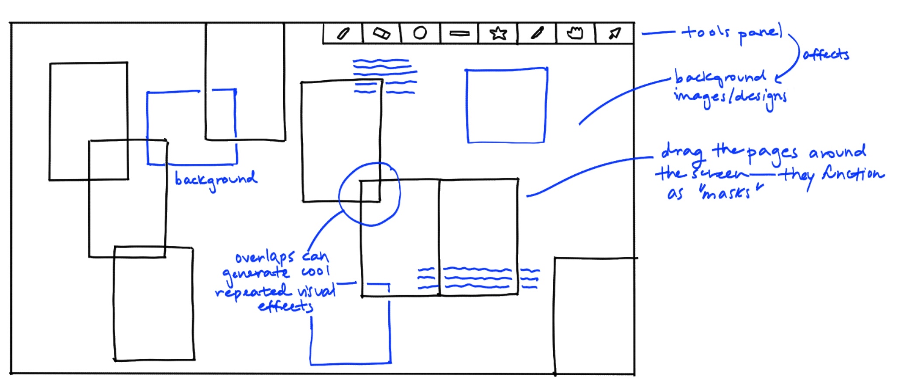
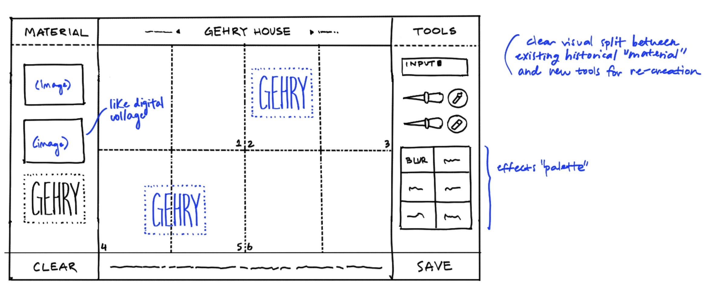
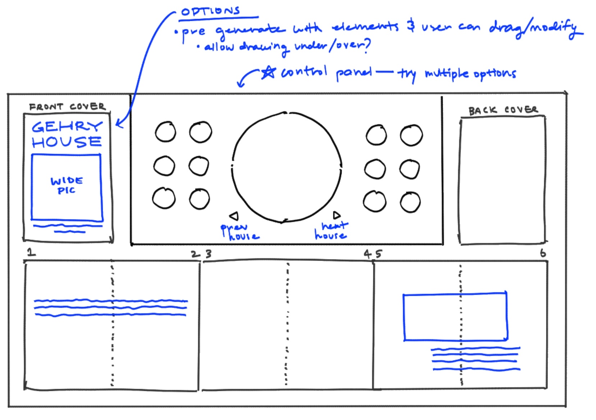
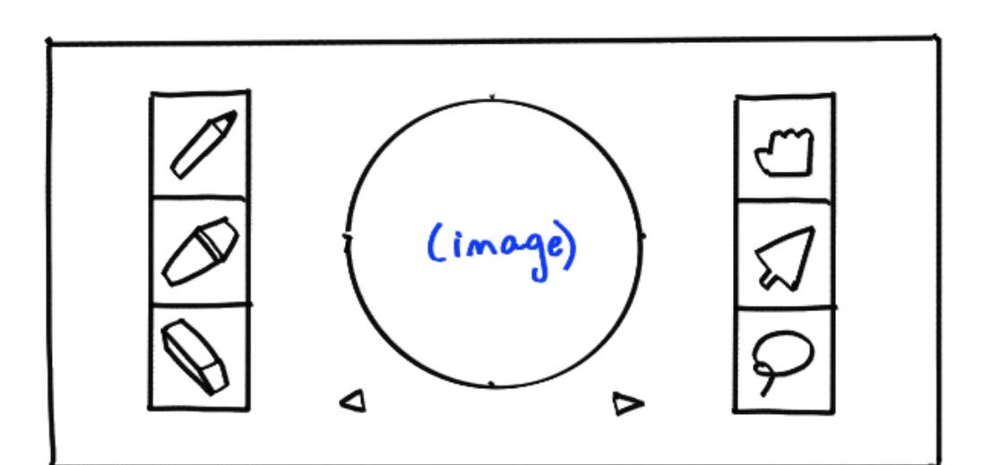
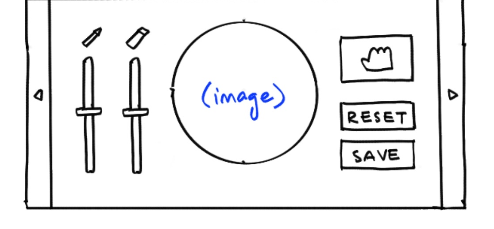

Digital Zine Maker
[1] I wanted to create a simple, grounded interface inspired by the clutter and texture of a real workspace. By
limiting the tool palette to immediately recognizable items (a sharpie, highlighter, etc.), the design encourages
messiness and exploration rather than pixel-perfeection.
[2] Three initial ideas for the zine creation interface.




